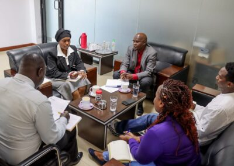
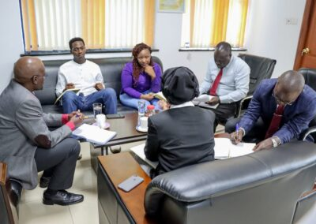

Peace, Art, and Youth: A New Approach to Curb Banditry and Cattle Rustling in Baringo County, Kenya

Introduction
The Kenya National Commission on Human Rights, represented by Commissioners Dr. Dennis Wamalwa & Sara Bonaya, in collaboration with Epuka Ugaidi, a youth-based Civil Society Organization, is taking a unique approach to tackle a long-standing issue. They are using art, peaceful messaging, and positive cultural expression to deter the youth from violence and radicalization. This comes as a much-needed initiative to curb the rising wave of banditry and cattle rustling in Baringo County, Kenya, which has disrupted economic growth, induced fear and insecurity among residents, and tarnished the country's international reputation.
Background: Understanding the Problem
Located in the Rift Valley region, Baringo County has been plagued with incessant incidents of banditry, cattle rustling, and other violent crimes, propelled by the unchecked proliferation of small arms. Traditional interventions from the community and the government have fallen short of curbing this menace.
The gravity of the problem has escalated due to the increasing use of advanced weapons, transforming cattle rustling from a cultural practice into a heavily politicized, organized crime. The destructive repercussions of this shift are evident in the intercommunity violent clashes, property destruction, and, unfortunately, loss of life. The underlying factors contributing to this vice range from historical and ethnic tensions, land disputes, and political interference to environmental degradation and economic inequality, among others. 
The Intervention: Lenga Ugaidi na Talanta
Understanding the gravity of the issue and the necessity of employing a novel, non-combative approach, the Lenga Ugaidi na Talanta (LUNT) initiative comes into the picture. Epuka Ugaidi, in partnership with Bondeni Renaissance, Baringo County Government, and Chanuka Muslim Youth Group, will pilot this program, aiming to engage the youth creatively, targeting their involvement in banditry and cattle rustling.
Importance of Art in Peacebuilding
Art has long been recognized as a potent medium for peacebuilding. The flexibility and creative potential of art make it an excellent tool for younger target groups, allowing them to express emotions, opinions, and hopes for the future in a non-violent manner. Art can offer a voice to the disempowered, provide a collective experience, and deliver powerful messages of change. Additionally, the sustainable and cost-effective nature of arts adds to their appeal as a transformative tool.
Role of Youth
Youth, being at the heart of this issue, possess immense potential to effect change. As primary actors in banditry and cattle rustling, they are in a position to promote a culture of forbearance and tolerance. It's crucial to involve them in formal decision-making processes, help them address the injustices they face, and provide them with platforms to express their discontent peacefully. 
The Action Plan: Creative Activities and Competitions
The LUNT initiative outlines a series of creative activities including Culture and Heritage Events, Peace Messaging Bonanzas, and a talent competition, the Lenga Ugaidi na Talanta Competition. By leveraging theatre arts, sports, social media, and creative competitions, the program aims to engage the youth, enhance understanding of the problem, and promote peace.
The Anticipated Outcomes and Impacts
The program expects to result in a significant reduction in banditry and cattle rustling incidents in Baringo County, an increased number of peaceable youth, and a decrease in economic losses. On a broader scale, the project anticipates improving the quality of life for communities and encouraging young people to use their skills and talents as an income-generating activity.
Conclusion
In a world plagued by violence and banditry, initiatives like Lenga Ugaidi na Talanta (LUNT) provide hope for a peaceful future. Harnessing the power of art and creativity to provide a non-violent platform for communication, resistance, and change is a novel and promising approach. While the project faces significant hurdles like potential resistance and insufficient resources, the determination and dedication of the organizers and participants indicate that progress is possible.
By engaging the youth – the primary actors in banditry and cattle rustling, LUNT aims to turn perpetrators into peacebuilders, fostering unity and growth in Baringo County. With a blend of theatre, sports, music, poetry, and art, the project seeks to offer youths an alternative to violent ways, transforming their energies into constructive pursuits. It's about providing an outlet for emotions, expressing thoughts and fears, and channeling energy towards sustainable development and peace.
As the program rolls out in the coming months, the residents of Baringo County will keep an eager eye on the promise it holds. If successful, LUNT could serve as a blueprint for similar initiatives in other regions suffering from similar conflicts. A culture of peace, tolerance, and creative expression might be the winning formula to put an end to banditry and cattle rustling in Baringo County and beyond.
Stay tuned for more updates on Lenga Ugaidi na Talanta's progress, outcomes, and impacts on Baringo County's struggle against banditry and cattle rustling. The future looks brighter, and it's painted with the colors of peace, unity, and artistic creativity.